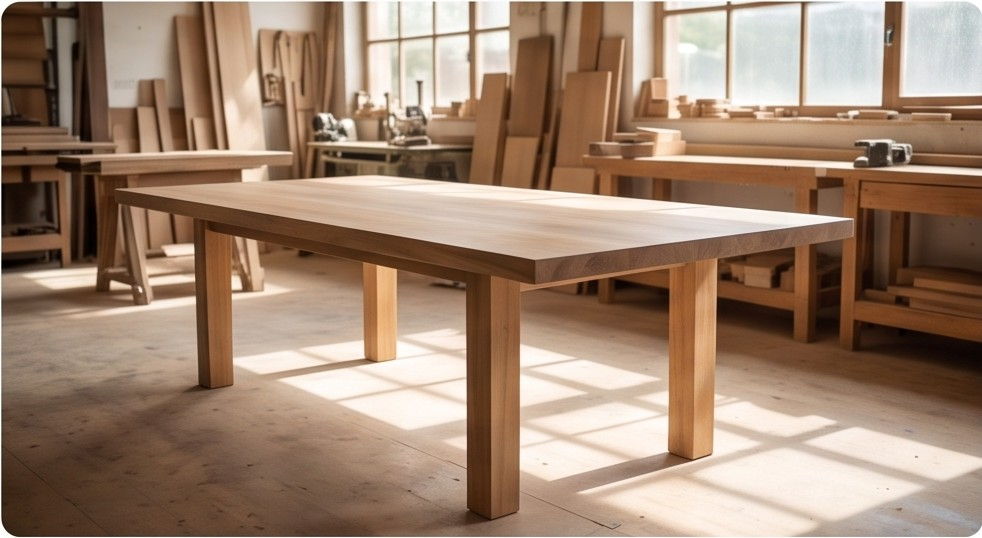

Storico AI
120 chiamateOgni chiamata all'AI, riuscita o no, dalla più recente. Apri una riga per vedere che cosa è stato chiesto e che cosa è tornato.
Per versione del prompt
| Tipo | Versione | Chiamate | Errori | Tempo medio | Costo | Voto medio |
|---|---|---|---|---|---|---|
| Analisi delle foto | analisi_v2 | 12 | 8% | 5,9 s | 0,26 $ | 3,6 / 5 |
| Analisi delle foto | analisi_v3 | 12 | 8% | 6,4 s | 0,43 $ | — |
| Piano della campagna | piano_v2 | 24 | 8% | 6,8 s | 0,69 $ | 3,6 / 5 |
| Testo di un post | post_v2 | 24 | 13% | 6,4 s | 0,48 $ | 3,6 / 5 |
| Testo di un post | post_v3 | 24 | 13% | 6,1 s | 0,84 $ | — |
| Immagine AI | immagine_v2 | 24 | 13% | 6,5 s | 0,65 $ | 3,6 / 5 |
120 chiamate · pagina 1 di 3 (50 per pagina)
Analisi delle foto
RiuscitaPiano della campagna
RiuscitaTesto di un post
RiuscitaTesto di un post
RiuscitaImmagine AI
Risposta fuori schemaAnalisi delle foto
Riuscita‹ 1 · 2 · 3 ›
Dettaglio di una chiamata
Si apre con un clic su una riga dell'elenco (/storico-ai/<id>). ↑ Storico AI
Analisi delle foto
Riuscita- Quando
- mar 27/10 · 17:40
- Campagna
- Autunno in bottega · Ceramiche Rossi
- Modello
- gpt-visione-5
- Versione del prompt
- analisi_v2
- Durata
- 2,4 s
- Costo
- 0,0040 $
- Token (ingresso / uscita)
- 1200 / 150
- Tentativo
- 1

Mostra la richiesta
{
"bottega": { "nome": "Ceramiche Rossi", "tono": "caldo e semplice", "forma": "tu" },
"campagna": { "titolo": "Autunno in bottega", "obiettivo": "far conoscere" },
"foto": "<foto 40>"
}
Risposta
{"esito": "ok"}
Il tuo voto
Voti dati
Immagine AI
Risposta fuori schema- Quando
- mar 27/10 · 15:12
- Campagna
- Natale a mano · Legni di Anna
- Modello
- gpt-immagine-2
- Versione del prompt
- immagine_v2
- Durata
- 1,2 s
- Costo
- 0 $
- Tentativo
- 2
Risposta
Nessuna risposta.
Voti dati
Nessuno ha ancora votato questa risposta.
Pagina statica, non interattiva. Storico delle chiamate all'AI (ADR-119, J9; spec R-44, R-50), solo per l'operatore (e l'admin): voce Storico AI nella barra, dopo Calendario e prima di Nuovo artigiano, accesa anche sul dettaglio. Dati di esempio; l'elenco e il dettaglio sono nell'app due pagine (/storico-ai e /storico-ai/<id>), qui una sotto l'altra.
Rotte (brief-richieste.md §1.3): GET /storico-ai?campagna_id=&tipo=&modello=&versione_prompt=&esito=&dal=&al=&pagina= (dalla più recente, 50 per pagina; dal e al sono date di Europe/Rome, comprese), GET /storico-ai/numeri con gli stessi filtri, GET /storico-ai/{id} (404 «Chiamata non trovata.») e POST /storico-ai/{id}/voto. Ogni chiamata, riuscita o no, con prompt, risposta, esito, durata e costo; i prompt e le risposte restano nel database e mai nei log.
Numeri e confronto tra versioni (T3-924). In cima, con gli stessi filtri dell'elenco: costo, chiamate, tempi medio e p95, tasso d'errore, voto medio, testi approvati come scritti dall'AI su testi approvati, modifiche a mano, rigenerazioni del testo, immagini create, non create e rigenerate; sotto, la tabella per versione del prompt, per confrontare v2 e v3. Il tasso d'errore e il voto medio contano solo le chiamate che li hanno.
Voto (T3-918): da 1 a 5, con una nota facoltativa. Ogni voto è una riga nuova con il nome di chi lo dà; un voto nuovo non cancella i precedenti (costituzione §1.2). Esiti: «Riuscita», «Errore temporaneo», «Richiesta non valida», «Rifiutata dall'AI», «Risposta fuori schema», «Configurazione». Nelle righe e nei filtri restano i nomi dei prompt (post_v3…): sono versioni, non stati.